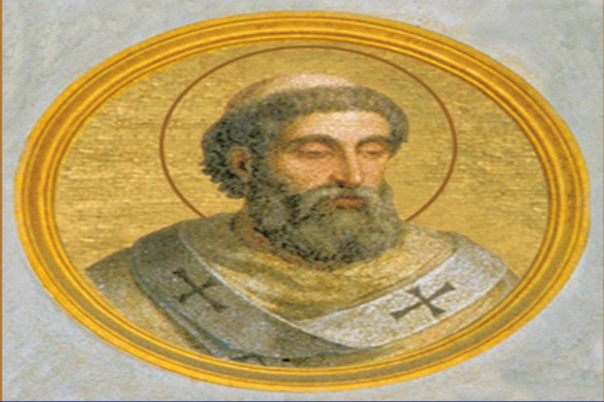

Origem
Os historiadores apontam que a provável origem do Halloween tenha sido um festival praticado pelos celtas chamado Samhain. Esse festival era uma das comemorações mais importantes do calendário celta e era realizado como um marco do fim verão. Era também uma passagem de ano para esse povo.
O Samhain também tinha um significado místico, uma vez que os celtas acreditavam que, durante o festival – que acontecia anualmente em 1º de novembro –, as barreiras que separavam o mundo dos mortos e o mundo dos vivos deixavam de existir. Com isso, acreditava-se que as almas dos mortos do último ano poderiam vagar pela Terra.
Durante o Samhain, os celtas realizavam celebrações com fogueiras e com fartura de alimentos. As fogueiras (ou lanternas) tinham como objetivo manter os mortos longe dos vivos e eram acendidas nos diversos locais em que se comemorava o Samhain.
Como o Halloween surgiu?
O surgimento do Halloween aconteceu em algum momento entre o século XIV e o século XVIII e tem total relação com a cristianização das áreas que praticavam o Samhain (Irlanda, Escócia e País de Gales). Uma prática muito comum da Igreja Católica, durante a cristianização da Europa, era a de criar festividades cristãs na mesma data em que eram realizados festivais pagãos.
Isso era uma forma de cristianizar as pessoas e de, ao mesmo tempo, apagar os traços da religião anterior e não foi diferente com os povos celtas. No período da Alta Idade Média, a Igreja possuía uma festa chamada All Saints Day, ou Dia de Todos os Santos, em português. Essa data era celebrada em maio, na data em que os romanos celebravam um festival para afastar espíritos malignos.
No século VIII, porém, o papa Gregório III acabou transferindo a data para 1º de novembro, exatamente a data em que era comemorado o Samhain. A festa, a princípio, acontecia somente em Roma, mas o papa seguinte, chamado Gregório IV, decidiu estendê-la para todos os fiéis da Igreja. Os historiadores especulam que talvez essa ação possa ter sido tomada para enfraquecer a festa pagã nas Ilhas Britânicas, pois, apesar da cristianização, a resistência das tradições pagãs na área era grande. Ainda assim, não é possível dizer com certeza se de fato foi essa a intenção dos dois papas citados.
Com isso, iniciou-se uma grande tradição em países como a Inglaterra, que, em 1º de novembro, celebrava o All Saints Day (dia de homenagem aos santos) e, em 2 de novembro, celebrava o All Souls Day (dia de orar pelos mortos). O dia 31 de outubro acabou transformando-se em All Hallows Eve, que significa “véspera do Dia de Todos os Santos”.